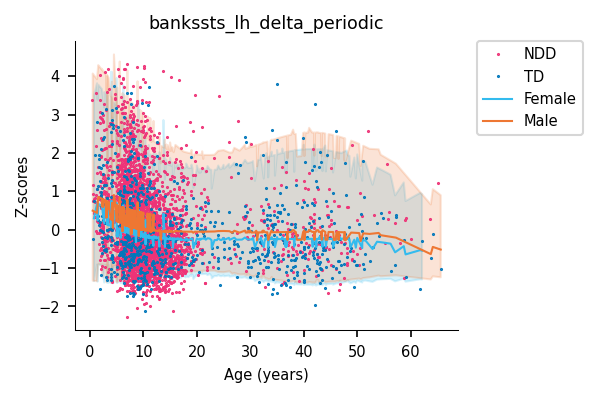

Heterogeneity of Brain Dynamics in Genetic and Neurodevelopmental Conditions
Abstract
Neurodevelopmental conditions (NDCs) are highly heritable disorders characterized by substantial genetic and phenotypic heterogeneity, yet robust electrophysiological biomarkers remain lacking. Whether this heterogeneity converges on shared neurophysiological alterations or instead reflects distinct disorder- and variant-specific signatures remains unclear. Here, we assembled the largest transdiagnostic resting-state EEG dataset to date, comprising 4,500 high-density recordings after quality control across 11 neurodevelopmental conditions and multiple rare genetic variants spanning ages 5 months to 66 years. Using normative source-space modelling, we characterized developmental trajectories in a typically developing reference population (n = 938) and quantified individual-level deviations across clinical and genetic groups.
Across idiopathic diagnoses, deviations were small (d < 0.5) and strongly correlated across conditions, revealing a shared transdiagnostic profile characterized by disrupted spectral organization, connectivity, and signal complexity. In contrast, individual rare genetic variants showed substantially larger effects (d > 0.8) and non-convergent neurophysiological signatures. Notably, 16p11.2 deletions and duplications exhibited mirror-opposite deviation patterns across multiple EEG features. Across both clinical and genetic groups, deviations showed a consistent spatial organization concentrated within sensorimotor cortices and aligned with the principal gradient of cortical gene expression. Subsampling analyses revealed that stable effect size estimates required substantially larger cohorts than typically used in the field, exceeding 400 participants for ASD but as few as 60 for Fragile X syndrome.
Together, these findings establish a large-scale transdiagnostic normative framework for source-space EEG in neurodevelopmental conditions and demonstrate that electrophysiological heterogeneity depends strongly on the level of biological stratification.
Dataset
4,500 resting-state EEG recordings acquired with 128-channel EGI systems across 8 independent sites, spanning ages 5 months to 66 years.
| Group | N | Sex (F/M) | Age (mean±SD) | Dataset | |||||||
|---|---|---|---|---|---|---|---|---|---|---|---|
| ABB | ABC-CT | CHUV | CIN | HBN | MGF | RDB | VIP | ||||
| Unselected / General population | |||||||||||
| TD | 944 | 495/449 | 18±15 | 94 | 108 | 19 | 71 | 228 | 333 | 77 | 14 |
| Ascertained for NDCs | |||||||||||
| AD | 849 | 474/375 | 11±5 | 0 | 0 | 0 | 0 | 826 | 23 | 0 | 0 |
| ADHD | 1663 | 1154/509 | 10±4 | 0 | 0 | 0 | 0 | 1468 | 78 | 117 | 0 |
| ASD | 1162 | 891/271 | 9±4 | 205 | 197 | 0 | 0 | 351 | 74 | 335 | 0 |
| DICCD | 477 | 298/179 | 10±3 | 0 | 0 | 0 | 0 | 383 | 1 | 93 | 0 |
| ED | 227 | 168/59 | 9±3 | 0 | 0 | 0 | 0 | 227 | 0 | 0 | 0 |
| ID | 204 | 135/69 | 13±10 | 0 | 0 | 0 | 0 | 91 | 90 | 10 | 13 |
| LD | 441 | 307/134 | 9±4 | 0 | 0 | 0 | 0 | 319 | 122 | 0 | 0 |
| MD | 233 | 184/49 | 10±3 | 0 | 0 | 0 | 0 | 200 | 33 | 0 | 0 |
| MDD | 227 | 114/113 | 15±6 | 0 | 0 | 0 | 0 | 221 | 6 | 0 | 0 |
| OCRD | 119 | 64/55 | 12±4 | 0 | 0 | 0 | 0 | 118 | 1 | 0 | 0 |
| SLD | 628 | 397/231 | 10±3 | 0 | 0 | 0 | 0 | 603 | 25 | 0 | 0 |
| IDI | 3192 | 2140/1052 | 11±8 | 205 | 197 | 0 | 0 | 2175 | 177 | 438 | 0 |
| Ascertained for Genetic liability | |||||||||||
| 16p DEL | 51 | 27/24 | 8.1 | 0 | 0 | 13 | 0 | 0 | 13 | 0 | 25 |
| DEL | 179 | 92/87 | 13±14 | 0 | 0 | 16 | 0 | 0 | 138 | 0 | 25 |
| 16p DUP | 26 | 18/8 | 11±12 | 0 | 0 | 0 | 0 | 0 | 11 | 0 | 15 |
| DUP | 115 | 67/48 | 15±15 | 0 | 0 | 2 | 0 | 0 | 98 | 0 | 15 |
| FXS | 70 | 38/32 | 20±10 | 0 | 0 | 0 | 0 | 70 | 0 | 0 | 0 |
| GEN | 364 | 197/167 | 15±14 | 0 | 0 | 18 | 0 | 70 | 236 | 0 | 40 |
| TOTAL | 4500 | 2832/1668 | 13±10 | 299 | 305 | 37 | 71 | 2403 | 746 | 515 | 54 |
Datasets
Diagnoses
Genetic variants
Normative Trajectories
Developmental trajectories of EEG features modelled in typically developing participants using GAMLSS, shown separately for each cortical region of interest and feature.

Banks STS (L) — Periodic power — Delta
Brain Map Explorer
Individual-level deviations from normative trajectories across conditions and EEG feature families. Warmer colors indicate positive deviations; cooler colors indicate negative deviations.

Idiopathic conditions — Periodic power
Model Diagnostics
GAMLSS model fit statistics for each EEG feature and region of interest. Shapiro-Wilk test assesses normality of residuals in the control group.
| Marker ↕ | Shapiro W ↕ | Shapiro p ↕ | Skewness ↕ | Kurtosis ↕ | AIC ↕ | BIC ↕ | SMSE ↕ | MSLL ↕ |
|---|---|---|---|---|---|---|---|---|
| Loading statistics... | ||||||||
Shapiro-Wilk p > 0.05 indicates normally distributed residuals. SMSE: standardised mean squared error; MSLL: mean standardised log loss. Click column headers to sort.
BibTeX
@article{Dubois2025heterogeneity,
title={Heterogeneity of Brain Dynamics in Genetic and Neurodevelopmental Conditions},
author={Dubois, Adrien E.E. and Lipp{\'e}, Sarah and Martin, Charles-Olivier and Knoth, Inga Sophia and Fontaine, Val{\'e}rie Kathleen and B{\'e}langer, Anne-Marie and Latr{\`e}che, Kenza and Schaer, Marie and McPartland, James C. and Webb, Sara Jane and Lefebvre, Aline and Delorme, Richard and Westerkamp, Grace C. and Pedapati, Ernest V. and Erickson, Craig A. and Rodriguez-Herreros, Borja and Chabane, Nadia and Jacquemont, S{\'e}bastien and Dumas, Guillaume},
journal={},
year={2025},
url={https://dub21.github.io/D-EEG}
}